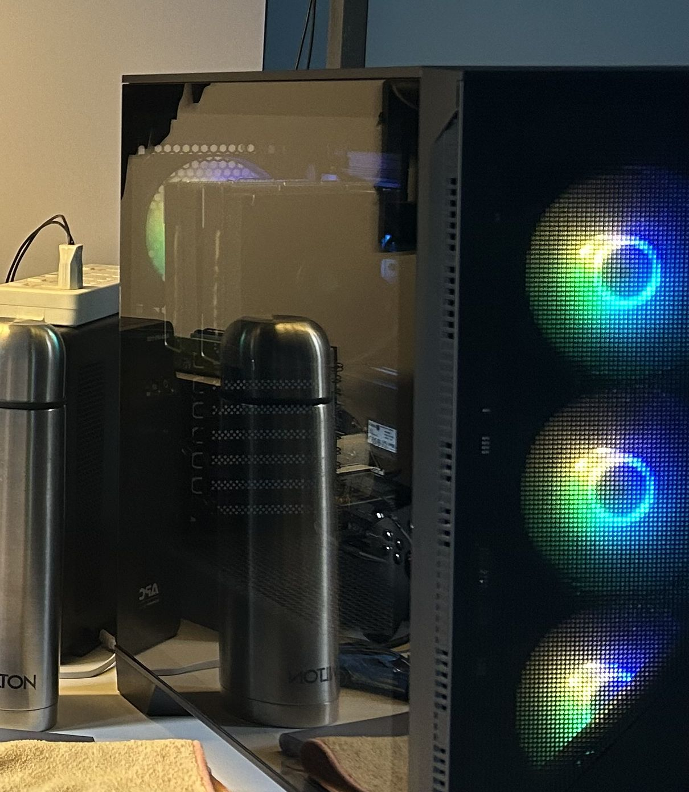

A Cloud of My Own
Most people rent the cloud — a slice of some company's warehouse, hundreds of miles away, that they'll never see. I built one in the corner of my room. This is why.
There is a corner of my room that hums.
Not loudly — a low, steady sound, the kind you stop hearing after a week and only notice again when it stops. It comes from a small stack of machines that quietly run a surprising amount of my life: the files I keep, the code I write, the things my devices ask the internet, the little services I've stopped renting from other people. People have a name for this hobby that makes it sound more official than it is. They call it a homelab.

What it actually is
Stripped of the jargon, a homelab is simple: instead of paying a big company to run software for you, on machines they own, in a building you'll never enter — you run it yourself, at home, on hardware you can reach out and touch.
One physical machine can pretend to be many. A single box, with the right software, splits itself into a dozen smaller virtual computers, each doing one job, each isolated from the others — so if one falls over, the rest don't notice. The network gets divided up the same way, into separate lanes, so the things that should never talk to each other simply can't. The result is that a corner of an ordinary room starts to behave like a very small, very personal data centre.
And once you have that, the temptation is irresistible: to stop renting. The photo backup, the file sync, the private git for your own projects, the thing that filters ads for the whole house — one by one, you bring them home. You replace "a service someone else runs" with "a service I run," and the corner fills up, and the hum gets a little deeper.
Half of engineering is understanding systems. The other half is the strange, stubborn urge to own the ones you depend on. A homelab is that second half, wearing fairy lights.
Why bother, honestly
The cloud is cheap, reliable, and someone else's problem. So why do this?
The first answer is learning, and it's the real one. You do not understand how the internet works until you have hosted a piece of it and watched it break. Renting a service teaches you a dashboard. Running one teaches you the whole stack underneath — the network, the storage, the certificates, the thousand small things that the dashboard was hiding. Every outage in that corner of my room is a lesson I paid for in frustration and now own forever. My day job is building reliable systems; this is where I learned, and keep learning, what reliable actually costs.
The second answer is control, which matters more to me every year. When a service lives on someone else's computer, you live by their terms — their price changes, their shutdowns, their quiet decisions about your data. When it lives in your room, it answers to you. One of the machines in that corner does nothing but resolve the questions every device in my home asks the internet, so those questions stay home instead of being handed to strangers — I wrote about that one on its own, in My House Was Whispering to Strangers. It's one room in this larger house.
The third answer is harder to defend and the most honest: it's mine. There is a specific, slightly childish joy in walking past a corner of your room and knowing that the small city of services humming there — the backups, the code, the filtering, the files — is something you built, understand, and keep. Not rented. Kept.
The discipline it teaches
A homelab is also a patient teacher of humility, because you are now the whole IT department, and the IT department gets no weekends off.
When you own the machine, you own the 2 a.m. failure. A drive fills up, a service crashes, an update goes wrong, the power flickers — and there's no support line, just you. So you learn the unglamorous virtues the hard way: keep backups, and test them, because a backup you've never restored is just a hope. Assume things will fail, and design so that when one does, the rest keep going. Put a battery between your machines and the wall, because the grid does not care about your uptime. (That's the other black box in the photo — a UPS, quietly holding the line every time the power stutters.)
The cloud sells you the illusion that infrastructure is effortless. A homelab sells you the truth: it's effort all the way down, and worth it.
None of this is critical to survival. I could rent all of it back tomorrow and my life would run fine. But I'd understand it less, control it less, and — this is the part that's hard to explain to people who don't feel it — I'd own less of my own digital life. The corner would go quiet, and something would be missing.
The hum, and what it means
I've written on this blog about a coast that taught itself to keep a forest it would never cut, and a month that built thrift and healing into the calendar — about people who understood that the things you truly depend on are the things you keep close and tend yourself. I don't think it's a coincidence that I ended up building a small, humming version of exactly that, in a corner of a room, out of glass and fans and stubbornness.
It's the same instinct in a different century. Keep what you depend on. Understand it. Tend it. Own it, end to end, root to leaf — even if it hums at night, even if it wakes you at 2 a.m., even if the cloud would do it cheaper. Especially then.
The corner of my room hums. It's the sound of a cloud I actually own.
Notes
I've deliberately kept the specifics of my own setup out of this — no addresses, no map, no inventory. If you want to start your own, the community is generous and the barrier is lower than it looks:
- The virtualization layer most homelabs are built on — Proxmox VE — is free and open-source.
- For ideas on what to actually self-host, awesome-selfhosted is the canonical list, and the r/selfhosted community is where people share and troubleshoot.